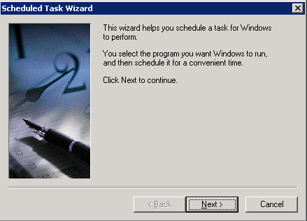
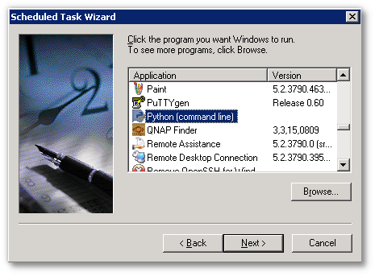
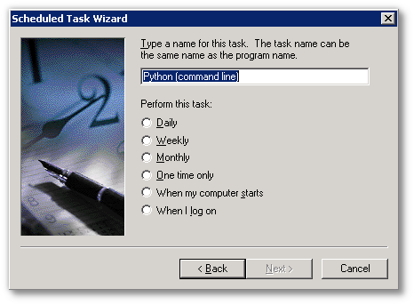
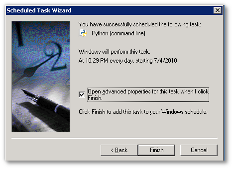

Overview
The TACTIC database needs backing up as part of a routine maintenance on the TACTIC system.
Procedure
Log into the TACTIC server as root
Make a backup of the existing /etc/crontab -the original crontab should look something like this:
The following line is an example of code that will write the date out to a file and run on the 15th minute of every hour:
Modify this example code to run in the next few minutes and add it to the
crontab. To see if the cron script ran, after the time has passed, verify
that the script wrote out the time to the file
/root/out. The following line is an example of how to backup
the TACTIC database every day at 3:45am yum
Be careful as this example will overwrite the backup every day . Another more clever way is the name the file with the date:
or
From crontab manpage: The ``sixth'' field (the rest of the line) specifies the command to be run. The entire command portion of the line, up to a newline or % char- acter, will be executed by /bin/sh or by the shell specified in the SHELL variable of the cronfile. Percent-signs (%) in the command, unless escaped with backslash (\), will be changed into newline characters, and all data after the first % will be sent to the command as standard input.
By using Task Scheduler can schedule tasks such as to automate DB backup to run at a time that is most convenient. Task Scheduler starts each time Windows is started, and runs as a background process. With Task Scheduler, you can: Schedule a task to run daily, weekly, monthly.
To add a scheduled task:
Create a windows batch script to back up the database
Click Start->Control Panel->Scheduled Tasks->Add scheduled Task
Create the task.

Use the provided python script to dump the database.

Run the task according to the schedule required.

At the concluding stage of the scheduled tasks wizard, be sure to check the "Open advanced properties for this task when I click Finish"

Edit the command line to read "<path to python>\python dbbackup.py", and click "OK"